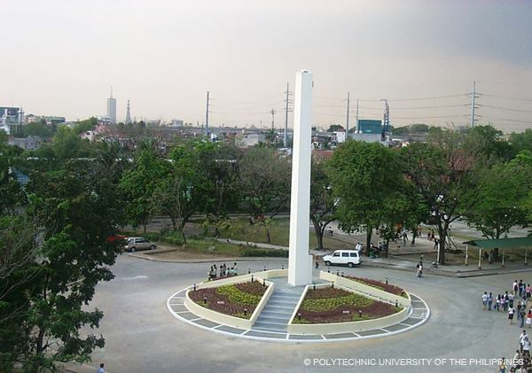

The Obelisk, standing majestic on its base, depicts the strength of the Polytechnic University of the Philippines
as an institution of higher learning, promoting educational and moral aims which are fortified by a determined leadership
with a clear vision for the Filipino youth and an efficient support system inspired by the virtues of public service.